Bình Phước
Vẻ đẹp tiềm ẩn

Vẻ đẹp tiềm ẩn

Vẻ đẹp tiềm ẩn
Trảng cỏ Bù Lạch là một bức tranh thiên nhiên gồm 20 trảng cỏ được bao quanh bởi một cánh rừng nguyên sinh rộng lớn.
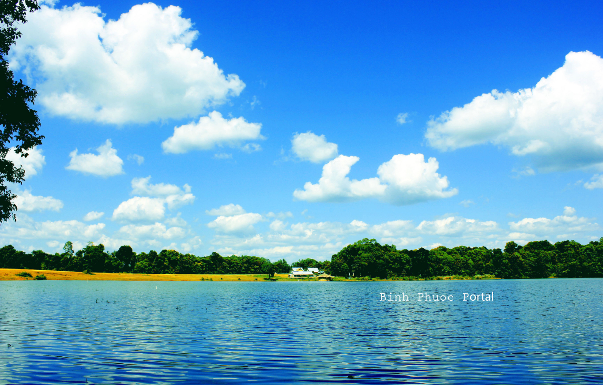Điểm nhấn nổi bật là một lòng hồ rộng lớn, trong xanh. Du khách có thể tổ chức cắm trại, vui chơi giải trí xung quanh hồ.
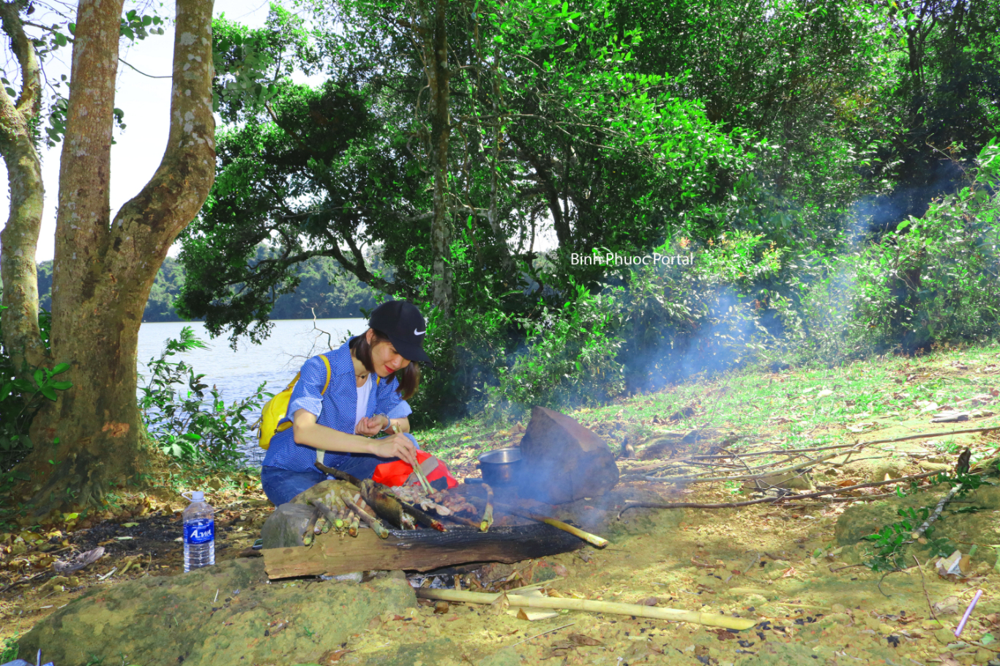Vườn quốc gia Bù Gia Mập là nơi bảo tồn các nguồn sinh quyển ở miền Đông Nam Bộ. Tuy nhiên nơi đây cũng là địa điểm tuyệt vời để check in, du lịch.
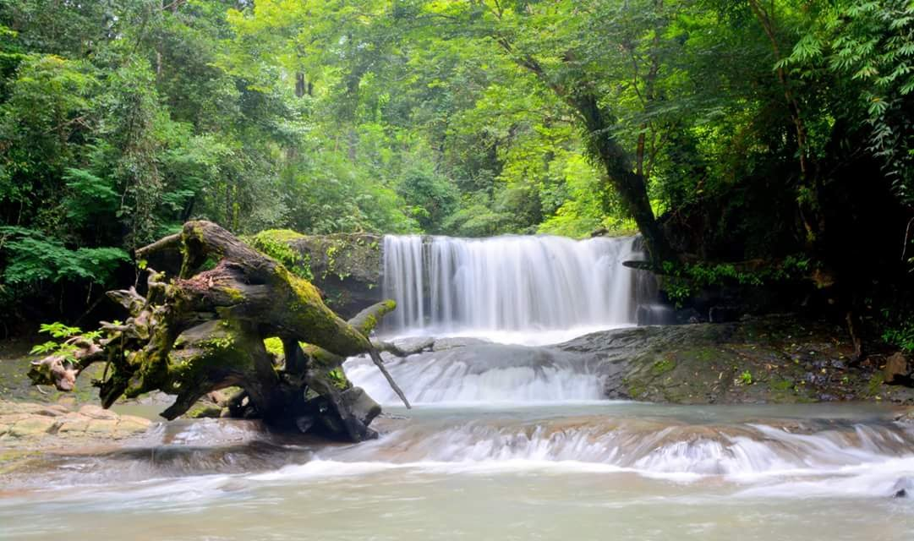 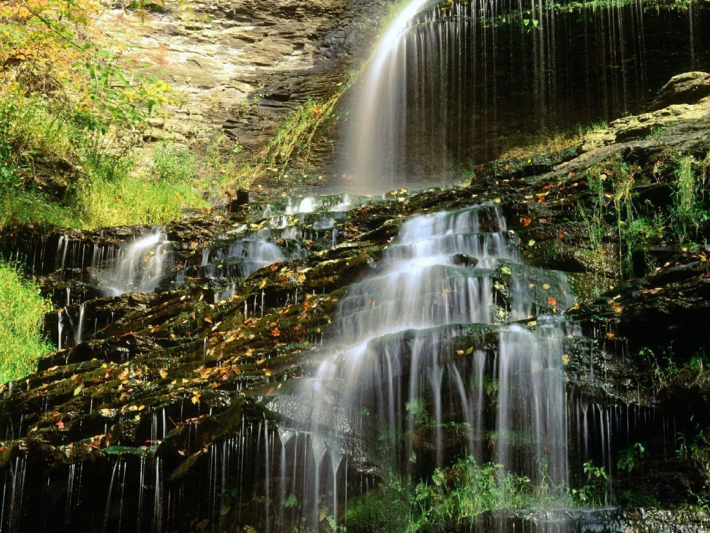Cách vườn quốc gia Bù Gia Mập không xa là Thác Đăk Mai với vẻ đẹp hút hồn.
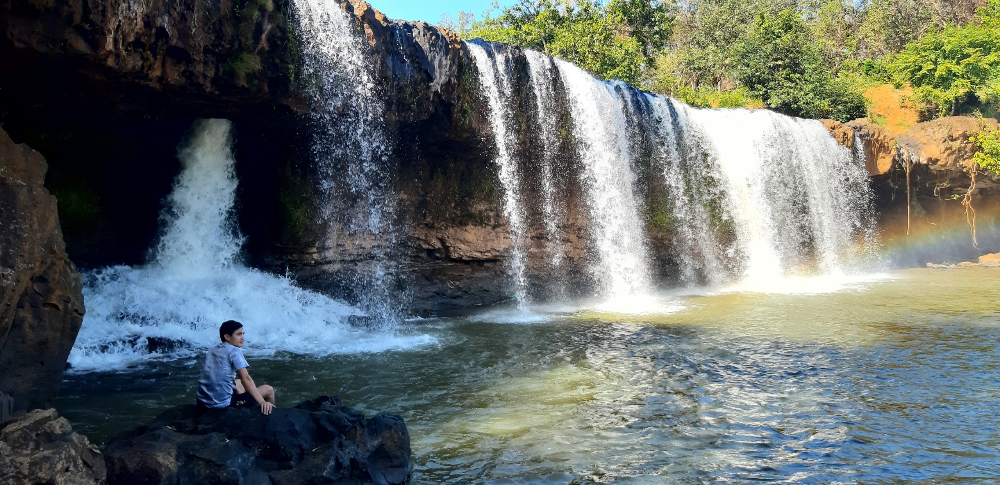 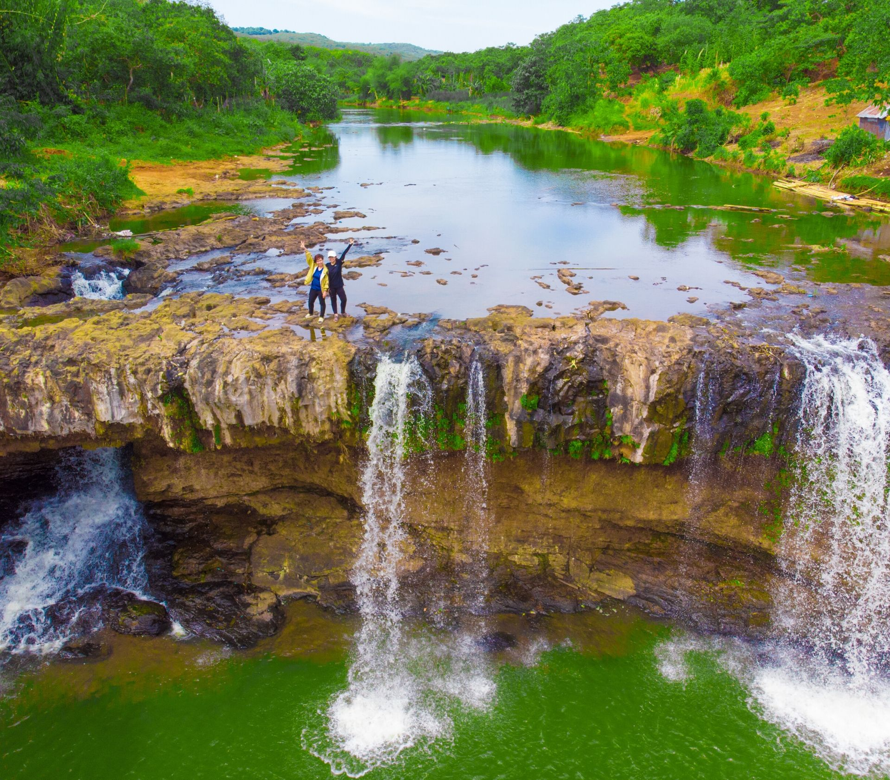Núi Bà Rá nằm ở thị xã Phước Long. Đây là ngọn núi cao thứ 3 ở Nam Bộ.
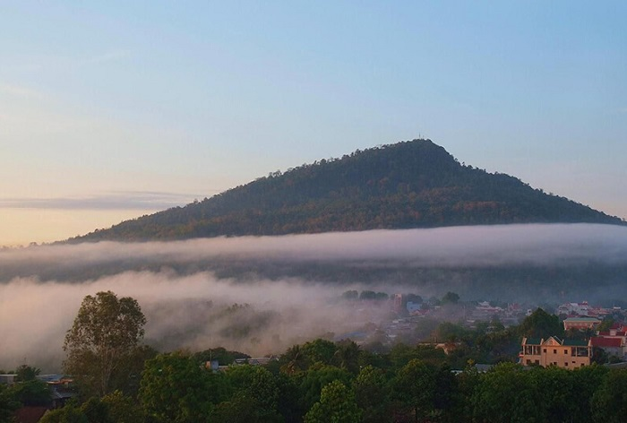 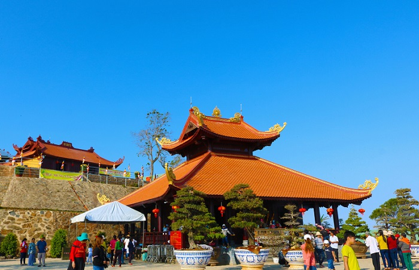 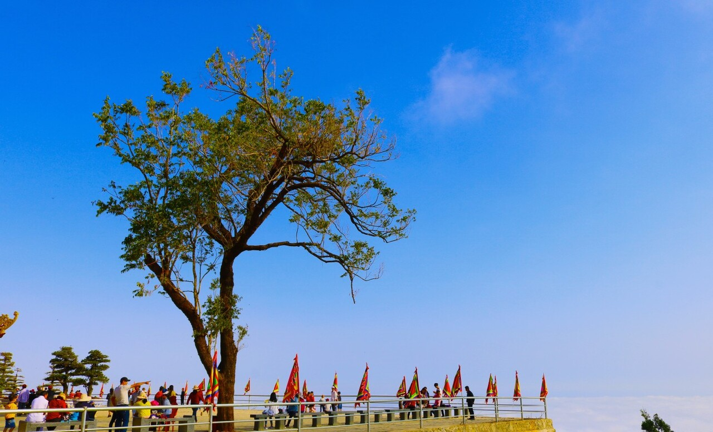Ngay sát dưới chân núi Bà Rá là hồ Thác Mơ. Đây là nhà máy thủy điện vô cùng rộng lớn với diện tích lên đến 12.000 ha. Khi đến nơi đây, các bạn sẽ cảm thấy sự thanh tĩnh, yên bình với những khung cảnh thơ mộng nên tranh.
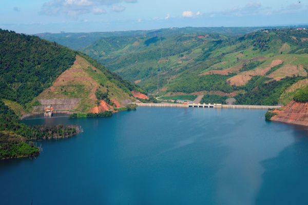 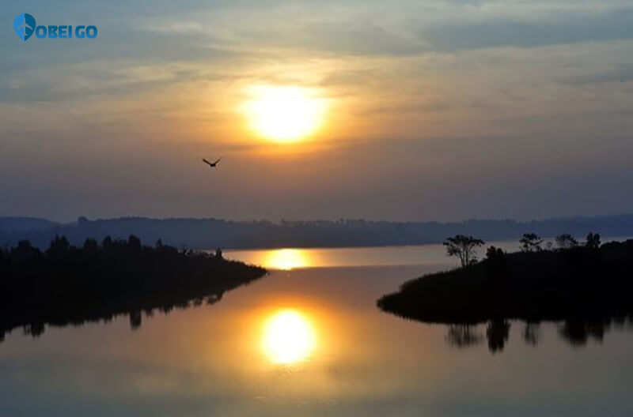Thậm chí những khu rừng cao su mùa thay lá cũng là điểm đến check in sống ảo tuyệt vời.
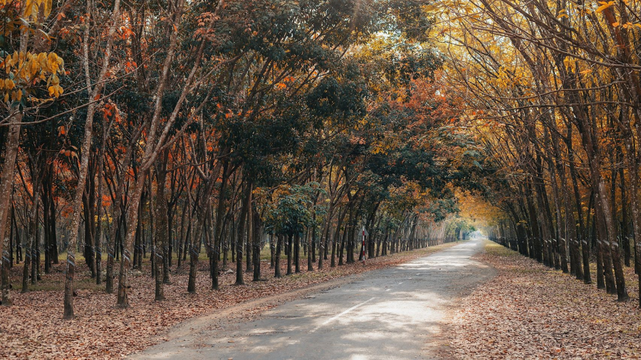 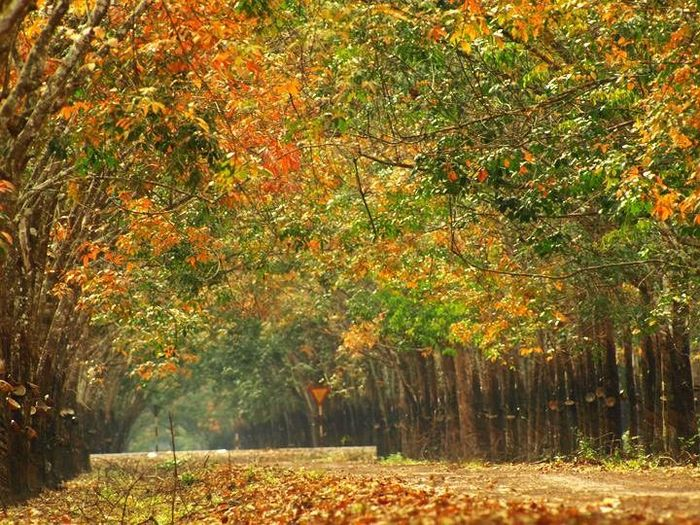 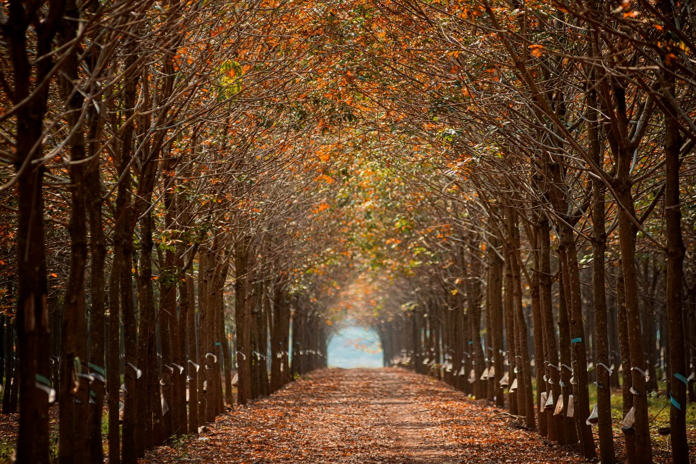